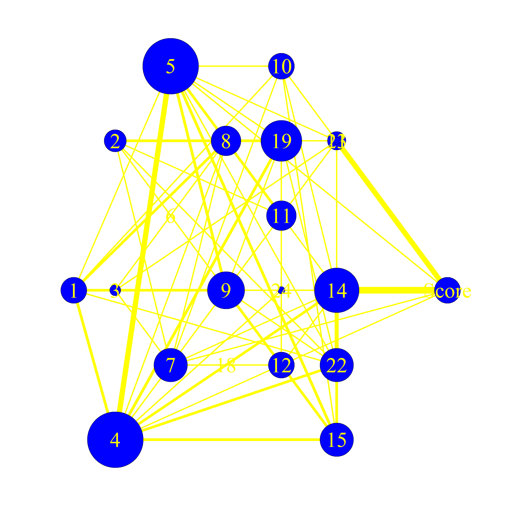
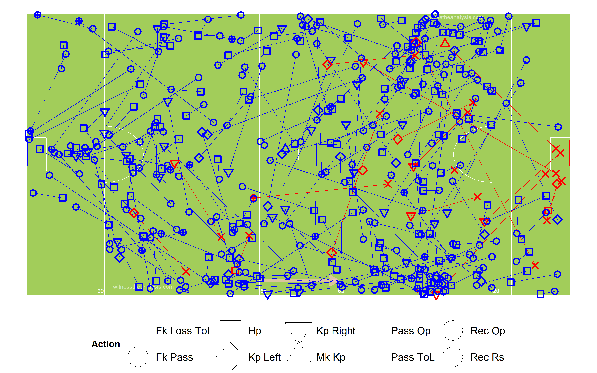
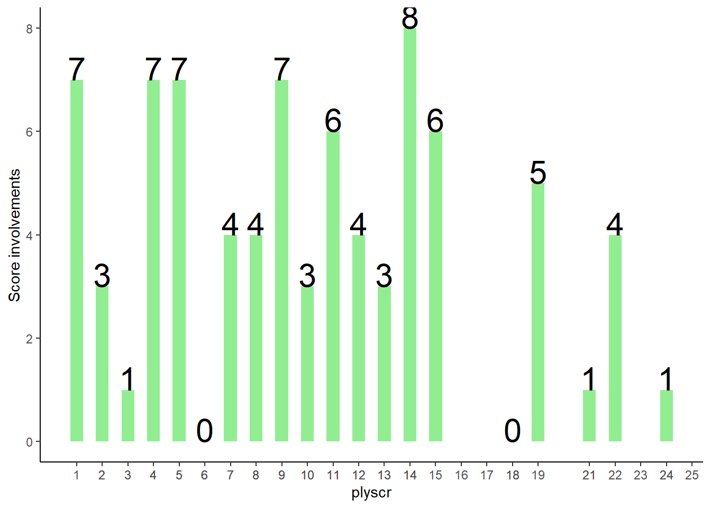

Galway vs Roscommon
Connacht Final - 2019
#Summary ##Starting Line Up (Number, Player, Playing time) ###Galway
###Roscommon
##Scores| Galway | Roscommon. |
|---|---|
| Walsh 0-4 (2fs) | Murtagh 1-3 (2fs) |
| Daly 0-3 (1f) | Cox 0-5 (2f) |
| Ó Laoí 0-2 | N. Daly 0-1 |
| Bradshaw 0-1 | R. Daly 0-1 |
| Ó Curraoin 0-1 | Killoran 0-1 |
| Brannigan 0-1 | Devaney 0-1 |
| Kilroy 0-1 |
| Team | Score.Eff.. | Shots.PerPoss | Scores.PP | Op.Scores.PP | Fk.Score. | Ko. |
|---|---|---|---|---|---|---|
| Galway | 53% | 36% | 23% | 15% | 100% | 67% |
| Roscommon | 63% | 38% | 29% | 19% | 100% | 65% |
##Scoring Timeline
##Score Differential
#Positioning & Possessions ##Average Position by Action ###Galway ###Game
###Period
###Roscommon ###Game
###Period
##Areas of Play by Possession ###Galway
###Roscommon
##Denisty Map (All Actions) ###Galway
###Roscommon
##Path of Possession
| Lines | X | X.1 | X.2 |
|---|---|---|---|
| Action | Colour | Action | Colour |
| Hand Pass | Black | Kickout Lost | Dark Red |
| Run | Blue | Kick Pass Left | Pink |
| Score | Yellow | Kick Pass Right | White |
| Miss shot | Red | Fk/Mk/Sl Pass | Light Blue |
| Kickout | Gold | Pass Loss | Red |
| Dots | |||
| Action | Colour | ||
| Possession Won | Purple | ||
| Ko/Pass Lost | Red | ||
| Fk Won | Blue | ||
| Fk Won (in 45) | Orange | ||
| Kickout Won | Black |
###Galway 
###Roscommon
#General ##Kick Outs ###Galway
###Kickout Efficiency
###Kickout Network - Galway
###Roscommon
###Kickout Efficiency
###Kickout Network - Roscommon
##Turn overs/Possession Won
###Galway

###Roscommon
##Frees Won ###Galway
###Roscommon
##Frees Loss ###Galway
###Roscommon
#Attacking
##Attacking Stats| Time | Shot | Score | Shot.1 | Score.1 |
|---|---|---|---|---|
| AttTime | 00:09:35 | 00:05:54 | 00:12:01 | 00:08:11 |
| possave | 00:00:32 | 00:00:30 | 00:00:36 | 00:00:38 |
| phaseave | 00:00:24 | 00:00:21 | 00:00:23 | 00:00:20 |
| Origin Type | Shot | Score | Shot | Score |
| PW | 14 | 11 | 14 | 8 |
| Ko | 4 | 1 | 6 | 6 |
| Pitch Area Origin | Shot | Score | Shot | Score |
| Def | 11 | 6 | 15 | 8 |
| Def Mid | 2 | 0 | 0 | 0 |
| Att Mid | 4 | 4 | 2 | 2 |
| Att | 1 | 2 | 3 | 0 |
| Poss Duration | Shot | Score | Shot | Score |
| 0-9 | 2 | 2 | 2 | 1 |
| 10-19 | 3 | 3 | 3 | 3 |
| 20-29 | 2 | 1 | 6 | 2 |
| 30-39 | 6 | 3 | 1 | 0 |
| 40-49 | 3 | 1 | 4 | 3 |
| 50-59 | 1 | 1 | 1 | 2 |
| 60-69 | 1 | 1 | 1 | 1 |
| 70+ | 0 | 0 | 2 | 1 |
| Team | Poss | Phase | All.Shots | All.Scores | Shots.Per.Poss | Scores.PP | Shots.Op | Scores.Op | Score.Eff.. | Op.Scores.PP |
|---|---|---|---|---|---|---|---|---|---|---|
| Galway | 53 | 64 | 19 | 12 | 36% | 23% | 15 | 8 | 53% | 15% |
| Roscommon | 52 | 73 | 20 | 14 | 38% | 27% | 16 | 10 | 63% | 19% |
| Team | Poss Time | Ave Poss Shot | Ave Phase Shot | Ave Poss Scr | Ave Phase Scr | Ave Act Poss | Ave Act Sht | Ave Act Scr | ||
| Galway | 00:20:15 | 00:00:32 | 00:00:24 | 00:00:30 | 00:00:21 | 13.2 | 18.3 | 17.2 | ||
| Roscommon | 00:22:44 | 00:00:36 | 00:00:23 | 00:00:38 | 00:00:20 | 11.7 | 14.9 | 16.1 |
| Galway | Shots | Time..secs. | X | X.1 | X.2 | X.3 | X.4 | X.5 | X.6 |
|---|---|---|---|---|---|---|---|---|---|
| Area | 0-9 | 10-19 | 20-29 | 30-39 | 40-49 | 50-59 | 60-69 | 70+ | Total |
| Def | 0 | 0 | 2 | 4 | 3 | 1 | 1 | 0 | 11 |
| Def Mid | 0 | 1 | 0 | 1 | 0 | 0 | 0 | 0 | 2 |
| Att Mid | 2 | 1 | 0 | 1 | 0 | 0 | 0 | 0 | 4 |
| Att | 0 | 1 | 0 | 0 | 0 | 0 | 0 | 0 | 1 |
| Galway | Scores | Time (secs) | |||||||
| Area | 0-9 | 10-19 | 20-29 | 30-39 | 40-49 | 50-59 | 60-69 | 70+ | Total |
| Def | 0 | 0 | 1 | 2 | 1 | 1 | 1 | 0 | 6 |
| Def Mid | 0 | 0 | 0 | 0 | 0 | 0 | 0 | 0 | 0 |
| Att Mid | 1 | 2 | 0 | 1 | 0 | 0 | 0 | 0 | 4 |
| Att | 1 | 1 | 0 | 0 | 0 | 0 | 0 | 0 | 2 |
| Roscommon | Shots | Time (secs) | |||||||
| Area | 0-9 | 10-19 | 20-29 | 30-39 | 40-49 | 50-59 | 60-69 | 70+ | Total |
| Def | 0 | 3 | 4 | 1 | 4 | 1 | 0 | 2 | 15 |
| Def Mid | 0 | 0 | 0 | 0 | 0 | 0 | 0 | 0 | 0 |
| Att Mid | 1 | 0 | 0 | 0 | 0 | 0 | 1 | 0 | 2 |
| Att | 1 | 0 | 2 | 0 | 0 | 0 | 0 | 0 | 3 |
| Roscommon | Scores | Time (secs) | |||||||
| Area | 0-9 | 10-19 | 20-29 | 30-39 | 40-49 | 50-59 | 60-69 | 70+ | Total |
| Def | 0 | 3 | 2 | 0 | 3 | 2 | 0 | 1 | 11 |
| Def Mid | 0 | 0 | 0 | 0 | 0 | 0 | 0 | 0 | 0 |
| Att Mid | 1 | 0 | 0 | 0 | 0 | 0 | 1 | 0 | 2 |
| Att | 0 | 0 | 0 | 0 | 0 | 0 | 0 | 0 | 0 |
##Open Play Shots - Location & Outcome
###Galway
###Shot Efficiency - Galway
###Roscommon

###Shot Efficiency - Roscommon
##All Shots - Location & Outcome ###Galway
###Roscommon
##All Shots Origin by Possession ###Galway (Blue = Score)
###Roscommon (Blue = Score)
##Open Play Shot Origin by Phase ###Galway (Blue = Score) 
###Roscommon (Blue = Score)
##Shot Network ###Galway
###Roscommon
##Score Network ###Galway
###Roscommon 
#Passing
##All Passes ###Galway
###Roscommon

##Passes into 45 ###Galway
###Roscommon
##Passes Inside Opp 65 ###Galway
###Roscommon
##Pass Network ###Galway
###In Degree (Number of Players a Player Received a Pass from)
## Brannigan Daly Bradshaw Walsh Daly Burke Silke O Donnell Flynn Cooke Heaney O Loai Kerin O Ceallaigh
## 14 13 11 11 11 11 10 10 10 10 9 8 7 6
## O Curraoin Kelly Varley Farragher Lavelle McDaid Molloy
## 5 5 5 4 2 0 0###Out Degree (Number of Players a Player Made a Pass to)
## Daly Brannigan Bradshaw Flynn Burke Cooke Silke Heaney O Donnell Daly Kerin Walsh O Ceallaigh O Loai
## 15 14 11 11 11 11 10 10 9 9 8 8 6 6
## Kelly O Curraoin Lavelle Varley Farragher McDaid Molloy
## 6 5 4 4 4 0 0###Strength in (Number of Passes Received by a Player)
## Bradshaw Daly O Donnell Daly Cooke Brannigan Flynn Burke Walsh Silke Heaney O Loai Kerin O Curraoin
## 24 24 22 22 20 19 18 17 16 14 12 12 9 8
## O Ceallaigh Varley Kelly Farragher Lavelle McDaid Molloy
## 7 7 6 4 3 0 0###Strength Out (Number of Passes/Shots Made by a Player)
## Daly Bradshaw O Donnell Cooke Flynn Brannigan Silke Daly Heaney Walsh Burke Kerin O Ceallaigh O Curraoin
## 29 28 22 19 18 17 16 16 16 14 14 11 8 8
## O Loai Kelly Lavelle Varley Farragher McDaid Molloy
## 8 7 5 4 4 0 0###Betweenness Centrality (Flow of Passes through a Player)
## Brannigan Daly Flynn Kerin Bradshaw Burke Silke Walsh Heaney Daly O Donnell Cooke Kelly
## 0.0675896361 0.0570407156 0.0219853926 0.0212941298 0.0198149014 0.0176649650 0.0159247620 0.0142381587 0.0136552621 0.0121811127 0.0114024882 0.0081641713 0.0079847054
## O Ceallaigh O Loai Varley O Curraoin Farragher Lavelle McDaid Molloy
## 0.0060950642 0.0031543792 0.0024729072 0.0019685990 0.0017666544 0.0008651531 0.0000000000 0.0000000000###Closeness Centrality (How Well connected and central a Player is within the Teams Network)
## Daly Brannigan Silke Bradshaw O Donnell Walsh Cooke Flynn Heaney Burke Kerin Daly O Loai O Ceallaigh
## 0.32786885 0.32258065 0.31746032 0.31746032 0.31250000 0.31250000 0.31250000 0.30769231 0.30769231 0.30769231 0.30303030 0.30303030 0.30303030 0.29411765
## O Curraoin Kelly Varley Lavelle Farragher McDaid Molloy
## 0.28985507 0.28985507 0.28169014 0.27777778 0.27397260 0.04761905 0.04761905###Entropy (The Unpredictability in who a Player Passes to/Takes shot)
## Daly Walsh Flynn O Donnell Burke Bradshaw O Curraoin Cooke Lavelle O Loai Daly Kerin Silke Varley
## 0.9303356 0.9423207 0.9429201 0.9460812 0.9491703 0.9536342 0.9641447 0.9667309 0.9671320 0.9676491 0.9677005 0.9685922 0.9752733 0.9766147
## O Ceallaigh Brannigan Heaney Kelly Farragher
## 0.9782224 0.9786071 0.9803599 0.9807239 1.0000000###Global clustering coefficient (Groups of Players who pass to each other)
## [1] 0.7601199###eigen_centrality (How well connected the well connected are)
## Bradshaw Daly O Donnell Daly Cooke Flynn Brannigan Burke Heaney Walsh Silke O Loai O Curraoin Kerin
## 1.00000000 0.90980675 0.87134539 0.74630462 0.73604165 0.67619270 0.60876229 0.54282048 0.52192545 0.51429399 0.51424489 0.36359615 0.32446882 0.32258866
## O Ceallaigh Kelly Varley Lavelle Farragher McDaid Molloy
## 0.27723377 0.17180945 0.13577030 0.12166925 0.11264641 0.02926876 0.02926876##Roscommon
###In Degree (Number of Players a Player Received a Pass from)
## C Daly R Daly Kiloran N Daly Darcy Murray Cox O Rourke Cregg Smith Mullooly O Malley Murtagh Devaney Kilroy Hussey Compton McKeon Glennon
## 11 11 11 10 10 9 9 8 8 8 7 6 6 5 5 4 3 1 1
## Stack
## 0###Out Degree (Number of Players a Player Made a Pass to)
## C Daly Darcy N Daly Kiloran Smith O Rourke Cox Murray Mullooly R Daly Devaney Cregg Hussey Kilroy O Malley Murtagh Compton McKeon Glennon
## 12 12 10 10 9 8 8 7 7 7 7 7 6 6 5 5 5 1 1
## Stack
## 0###Strength in (Number of Passes Received by a Player)
## N Daly Darcy C Daly Kiloran Smith R Daly Cox Cregg Murray Mullooly Devaney Murtagh O Malley O Rourke Kilroy Hussey Compton McKeon Glennon
## 26 24 19 17 14 13 13 12 10 10 9 9 8 8 8 6 4 1 1
## Stack
## 0###Strength Out (Number of Passes/Shots Made by a Player)
## C Daly N Daly Darcy Kiloran R Daly Murray Smith Devaney Cregg O Malley O Rourke Cox Mullooly Hussey Compton Kilroy Murtagh McKeon Glennon
## 26 26 21 20 13 12 11 10 10 9 9 9 8 8 7 6 5 1 1
## Stack
## 0###Betweenness Centrality (Flow of Passes through a Player)
## Cox C Daly Darcy Kiloran N Daly R Daly O Rourke Cregg Murray Smith Devaney Mullooly Kilroy
## 0.1421640356 0.1025374741 0.0384095467 0.0334083786 0.0299550466 0.0293779302 0.0200231722 0.0122738309 0.0108676574 0.0106833979 0.0092951419 0.0066685414 0.0060158815
## Hussey Murtagh O Malley Compton McKeon Glennon Stack
## 0.0053197615 0.0022583705 0.0018947150 0.0008354219 0.0000000000 0.0000000000 0.0000000000###Closeness Centrality (How Well connected and central a Player is within the Teams Network)
## C Daly R Daly Kiloran Darcy N Daly O Rourke Cox Cregg Smith Murray Devaney Mullooly Murtagh Kilroy Hussey O Malley Compton
## 0.4634146 0.4634146 0.4634146 0.4523810 0.4418605 0.4418605 0.4418605 0.4318182 0.4222222 0.4130435 0.4130435 0.4042553 0.4042553 0.3958333 0.3877551 0.3800000 0.3800000
## McKeon Glennon Stack
## 0.3518519 0.3166667 0.0500000###Entropy (The Unpredictability in who a Player Passes to/Takes shot)
## Devaney N Daly Cregg Darcy C Daly Compton Murray Kiloran O Malley Smith R Daly Cox Hussey Kilroy Murtagh Mullooly O Rourke
## 0.9153160 0.9260023 0.9365487 0.9383581 0.9419780 0.9484503 0.9557670 0.9576325 0.9646600 0.9647709 0.9657216 0.9714029 0.9741109 0.9766875 0.9766875 0.9784957 0.9924539
## McKeon Glennon
## 1.0000000 1.0000000###Global clustering coefficient (Groups of Players who pass to each other)
## [1] 0.7097701###eigen_centrality (How well connected the well connected are)
## N Daly Darcy C Daly Kiloran Smith Murray Cregg O Malley R Daly Devaney Mullooly Cox Hussey O Rourke Murtagh
## 1.00000000 0.89303295 0.81360910 0.70799579 0.45337875 0.45228427 0.42637586 0.42529996 0.42042008 0.39548493 0.31058889 0.30109252 0.26290725 0.25691758 0.25477527
## Compton Kilroy Stack McKeon Glennon
## 0.23515283 0.22041068 0.07983196 0.03650604 0.01974763#Player Stats ##Player On Ball Possession (Number, Player, Total) ###Galway
###Roscommon
##Posessions Per Playing Time
##Player % involvement and shot efficiency| Team | ply | opshots | Totteamshot | opscr | Totteamscr | convrate |
|---|---|---|---|---|---|---|
| Galway | Lavelle | 0 | 0% | 0 | 0% |
|
| Galway | Kerin | 0 | 0% | 0 | 0% |
|
| Galway | O Ceallaigh | 0 | 0% | 0 | 0% |
|
| Galway | Silke | 0 | 0% | 0 | 0% |
|
| Galway | O Donnell | 0 | 0% | 0 | 0% |
|
| Galway | Bradshaw | 1 | 7% | 1 | 14% | 1 |
| Galway | Daly | 1 | 7% | 0 | 0% | 0 |
| Galway | Flynn | 0 | 0% | 0 | 0% |
|
| Galway | O Curraoin | 1 | 7% | 1 | 14% | 1 |
| Galway | Walsh | 3 | 20% | 1 | 14% | 0.333333333 |
| Galway | Daly | 3 | 20% | 2 | 29% | 0.666666667 |
| Galway | Heaney | 0 | 0% | 0 | 0% |
|
| Galway | O Loai | 2 | 13% | 2 | 29% | 1 |
| Galway | Burke | 0 | 0% | 0 | 0% |
|
| Galway | Cooke | 0 | 0% | 0 | 0% |
|
| Galway | Brannigan | 2 | 13% | 1 | 14% | 0.5 |
| Galway | Kelly | 0 | 0% | 0 | 0% |
|
| Galway | McDaid | 0 | 0% | 0 | 0% |
|
| Galway | Varley | 2 | 13% | 0 | 0% | 0 |
| Galway | Farragher | 0 | 0% | 0 | 0% |
|
| Galway | Molloy | 0 | 0% | 0 | 0% |
|
| Team | ply | opshots | Totteamshot | opscr | Totteamscr | convrate |
|---|---|---|---|---|---|---|
| Roscommon | O Malley | 0 | 0% | 0 | 0% |
|
| Roscommon | Murray | 0 | 0% | 0 | 0% |
|
| Roscommon | Mullooly | 0 | 0% | 0 | 0% |
|
| Roscommon | C Daly | 0 | 0% | 0 | 0% |
|
| Roscommon | N Daly | 2 | 13% | 1 | 10% | 0.5 |
| Roscommon | Hussey | 0 | 0% | 0 | 0% |
|
| Roscommon | R Daly | 1 | 6% | 1 | 10% | 1 |
| Roscommon | O Rourke | 0 | 0% | 0 | 0% |
|
| Roscommon | Kiloran | 1 | 6% | 1 | 10% | 1 |
| Roscommon | Devaney | 1 | 6% | 1 | 10% | 1 |
| Roscommon | Cregg | 1 | 6% | 0 | 0% | 0 |
| Roscommon | Kilroy | 1 | 6% | 1 | 10% | 1 |
| Roscommon | Murtagh | 3 | 19% | 2 | 20% | 0.666666667 |
| Roscommon | Cox | 4 | 25% | 3 | 30% | 0.75 |
| Roscommon | Smith | 2 | 13% | 0 | 0% | 0 |
| Roscommon | Darcy | 0 | 0% | 0 | 0% |
|
| Roscommon | Compton | 0 | 0% | 0 | 0% |
|
| Roscommon | McKeon | 0 | 0% | 0 | 0% |
|
| Roscommon | Glennon | 0 | 0% | 0 | 0% |
|
| Roscommon | Stack | 0 | 0% | 0 | 0% |
|
##Open Play Shots vs Play Time
##Open Play Scores vs Play Time
##Open Play Shots vs Open Play Score
##Player Possession Involvement ###Galway
###Roscommon
##Player Shot Involvement ###Galway
###Roscommon
##Player Score Involvement ###Galway
###Roscommon 
##Actions and Zones ##By Period ###Galway
###Roscommon
##Zones Frequency ###Galway
###Roscommon